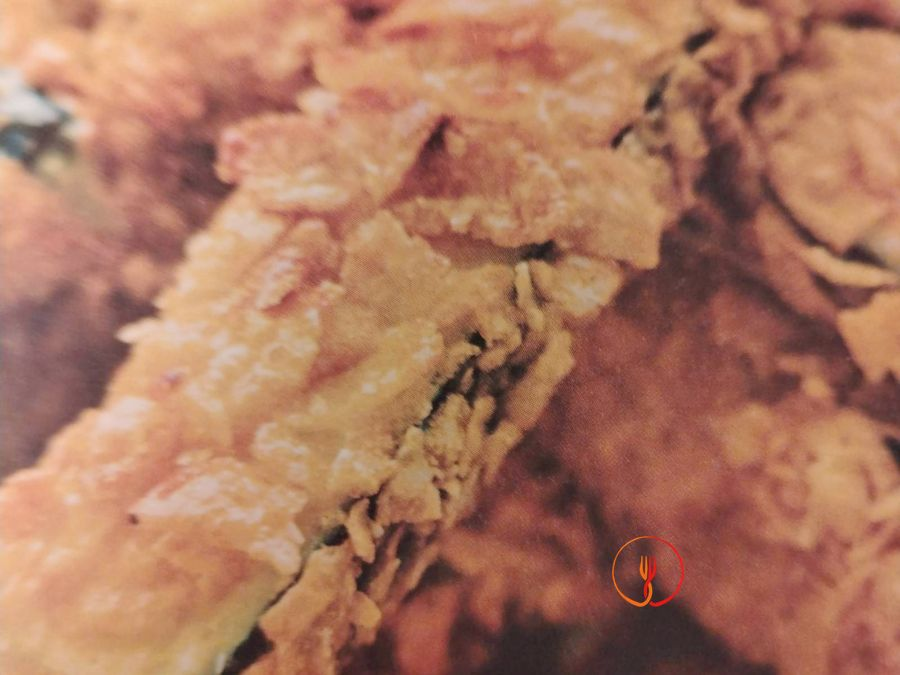

Zucchini sticks
Also great for children
Ingredients
- Genovese zucchini3
- Flour200 g
- Eggs3
- Corn flakesas needed
- Oilas needed
- Saltas needed
Allergens
Gluten, Eggs
May contain traces of: Tree nuts, Milk, Soy.
Method
- Cut the zucchini into sticks of about 1 cm, salt them and let them rest for a few minutes
- Beat the eggs
- Put the flour on one plate and the crushed corn flakes on another
- Coat the zucchini sticks first in the flour, then in the egg, and finally in the corn flakes
- Arrange the sticks on a baking tray and drizzle with a little oil
- Bake at 180°C for 15 minutes. Turn them halfway through cooking
- N.B. They can also be cooked in an air fryer
Nutrition facts (estimate)
| Per serving (135 g) | Per 100 g | |
|---|---|---|
| Energy | 1117 kJ / 267 kcal | 828 kJ / 198 kcal |
| Protein | 8.5 g | 6.3 g |
| Carbohydrates | 40 g | 30 g |
| of which sugars | 3.7 g | 2.7 g |
| Fat | 7.9 g | 5.9 g |
| of which saturates | 1.1 g | 0.8 g |
| Fibre | 2.1 g | 1.6 g |
| Salt | 0.5 g | 0.4 g |
AI estimates based on average CREA / USDA data: indicative only, not a substitute for medical or dietitian advice.
Open the recipe in the app for the shopping list, ingredient sheets and nearby shops.